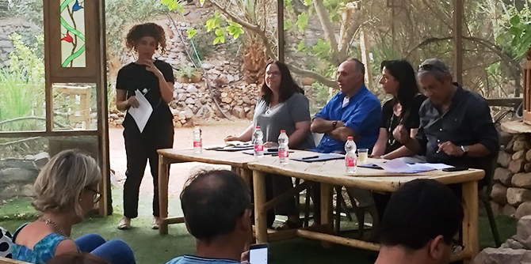

An exciting Mandel Negev Platform event brought together fellows of the Mandel Program for Local Leadership in Eilat-Eilot and a group of mayors from the region to discuss demographic, economic, and social challenges facing the region. Conducted at the Eilat Botanical Gardens on May 1, 2018, the event was led by Dr. Nitza Roskin, a faculty member of the Mandel Center for Leadership in the Negev who heads the Eilat-Eilot program. The inspirational event offered a unique opportunity for an open exchange of ideas between heads of Negev local authorities and fellows who are active in a diverse range of activity in the region.
Participants in the event included Mayor Meir Yitzhak Halevi, who heads the Eilat municipality, Dr. Hanan Ginat, head of the Hevel Eilot regional council, and Sigal Moran, head of the Bnei Shimon regional council. These leaders emphasized the importance of regional cooperation and broader regional approaches, illustrating their points by describing initiatives they are promoting in the fields of education, demographic growth, health, employment, and civil society in the region.
All three agreed that cooperation is essential as a growth engine for the region, despite the complexities and challenges that accompany it. Indeed, regional cooperation and region-wide perspectives have begun to play a far more prominent role in the activities of the mayors in recent years. This is due to an appreciation of the added value of such cooperative efforts in dealing with complex issues that require creative solutions at a regional level, and of their value in negotiations between local authorities and government ministries.

As an example, Halevi and Ginat spoke about the challenge of the geographical remoteness of Eilat-Eilot from the rest of the Negev. This limits the range of educational institutions that can be provided due to the small number of residents, necessitating a great deal of creativity in order to provide internal variety within existing educational frameworks and to develop shared regional frameworks. Another challenge is demographic: Eilat-Eilot has a diverse range of employment opportunities that have the potential to attract younger people and former residents who have moved away. Currently, however, the region has an aging population (the average age has risen considerably and now stands at over 55). There is therefore a need for a comprehensive strategy for drawing younger individuals and families to the area.
Many of the projects being developed by fellows of the Mandel Center for Leadership in the Negev seek to address issues that were brought up at the event. The main achievement of the evening were familiarizing the Mandel fellows and regional leaders with each other, the discussions that involved the heads of the local authorities in the challenges facing the region, and the emphasis on the need for operative programs for the coming years. The event facilitated open dialogue and enabled the fellows to explore the region’s challenges and opportunities in depth, and highlighted the importance of leadership that will lead change in the Eilat-Eilot region and throughout the Negev.
{kind=link}